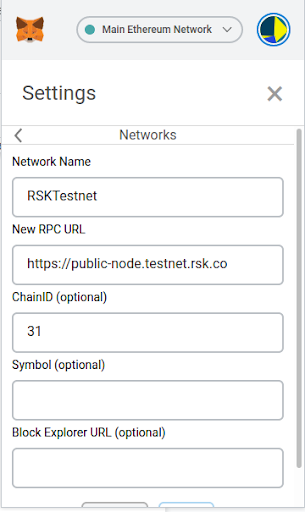
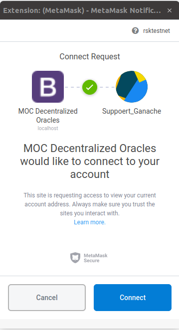
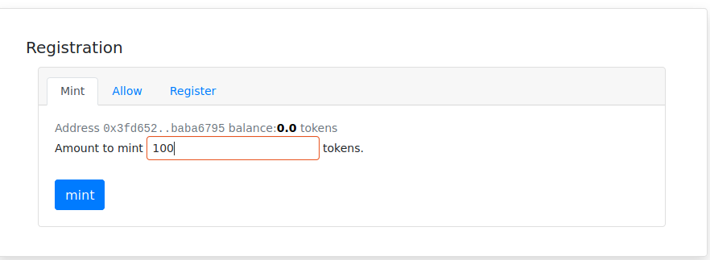
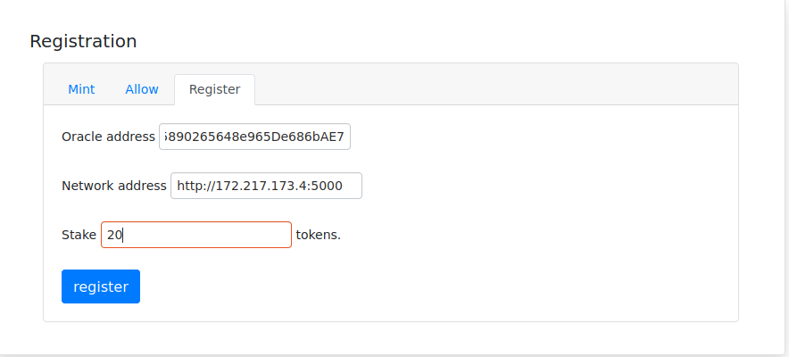
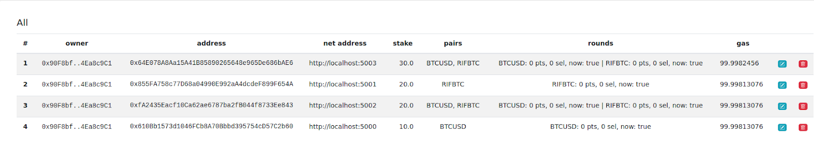
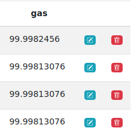

Dapp Guide
Introduction
The intention of this document is to guide the user on how to interact with the dapp. For this reason, we assume that the reader has a knowledge of how the decentralized oracle system and its supporters work in general.
Prerequisites
- A complete understanding of the Oracle-Supporter interaction Setup and run your Oracle on a server.
- Know the RSK address (0x...) and internet address of your Oracle (http://
:5556). - Install Metamask in your browser.
Interaction with the Dapp
Login and Setup
Add RSK-Test to Metamask and select that network.
Go to Network's menu, select Custom RPC and config the network with the following values and save:


Network name: RSKTestnet New RPC URL: https://public-node.testnet.rsk.co ChainId: 31
Get RSK in RSK_testnet
Visit https://faucet.rsk.co/ and complete the form to get Ethers.
Enter the Site Web and connect your metamask account. (Not ready yet)

Structure of the Site
The site is divided into five tabs. In this guide we will use those tabs as reference.
Tab Oracles
Registration (Mint->Allow->Register)
To register your Oracle, you will need to allow the contract to use your MoCTokens. To do that, go to the Oracle tab and subtab Registration, and mint MoC Token (will be assigned to your account). After that allow part or the total of your MoCToken to the contract. For the last step, register your Oracle using the Oracle address, the network address and stake the total or part of what you allow, in the allow step.


Edit your Oracle's configuration
At the end of the Oracle Tab you will see all of the Oracles and you will be allowed to edit or delete only your Oracles.


If you chose to edit your oracle, you can change the internet Address, the Stake and/or the subscription to the coin-pairs

Coin Pairs - actions (Distribute & Switch Round) At the Tab Oracle you can see the "Coin Pairs" interface, there you can switch round or Distribute.
The Distribute function will send SupportersWhitelisted's MocTokens to each Supporter.

Tab Supporters
Registration (Mint->Allow->Stake) To register your metamask account as a supporter go to the supporter tab and subtab Supporter Info. Mint MocToken if you haven't, Allow the contract to manage part of your MocToken and Stake the MoCTokens. Stop You can Stop your supporter whenever you want. Withdraw You can withdraw your money after N blocks have passed since you stopped your account as a supporter.